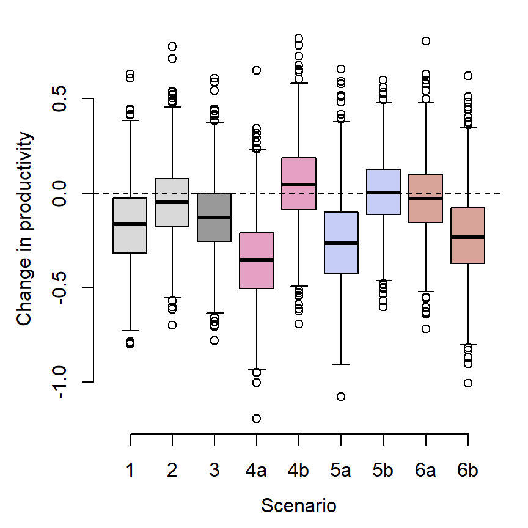
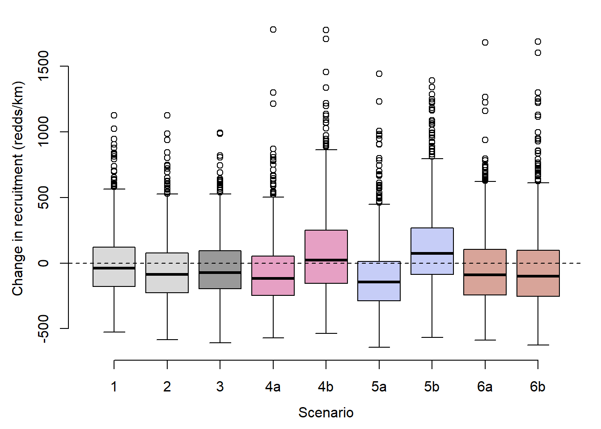

Code
library(manipulate)
library(tidyverse)
library(abind)
library(DT)
library(sf)
library(mapview)
library(wesanderson)Purpose: Develop tools to understand effects of alternative water management and climate scenarios on future YCT productivity. Generate estimates/projections of future population productivity and redd density from the fitted Bayesian state-space hierarchical Ricker stock-recuitment model.
library(manipulate)
library(tidyverse)
library(abind)
library(DT)
library(sf)
library(mapview)
library(wesanderson)reddctsumm: summarized redd count data (coordinates, start and end years, number of years, and median redd density)
reddctsumm <- read_csv("ReddCounts_DataSummary.csv")
datatable(reddctsumm %>% mutate(across(c(lat, long, med.redds), round, 3)))Mcmcdat: Raw MCMC samples from the Bayesian model
Mcmcdat <- read_csv("Model output/ReddCountsRicker_Phase1_Age01p_mcmcsamps.csv")
head(Mcmcdat)# A tibble: 6 × 9,924
`A[1]` `A[2]` `A[3]` `A[4]` `A[5]` `A[6]` `A[7]` `A[8]` `A[9]` `A[10]` `A[11]`
<dbl> <dbl> <dbl> <dbl> <dbl> <dbl> <dbl> <dbl> <dbl> <dbl> <dbl>
1 1.08 1.03 1.21 1.55 1.46 1.11 1.08 1.93 1.08 1.60 1.00
2 0.753 1.44 1.93 1.54 1.59 1.21 1.33 1.87 1.31 1.59 0.816
3 0.694 1.13 1.40 0.778 1.08 1.76 1.17 2.04 1.10 1.25 1.54
4 0.631 1.19 1.58 1.01 1.01 1.41 0.904 1.68 1.16 1.46 1.70
5 0.804 1.10 1.38 0.930 1.22 1.18 1.46 1.49 1.40 1.14 1.03
6 1.18 0.815 1.05 0.957 1.49 1.61 1.03 1.26 1.16 1.25 1.04
# ℹ 9,913 more variables: `A[12]` <dbl>, `A[13]` <dbl>, `B[1]` <dbl>,
# `B[2]` <dbl>, `B[3]` <dbl>, `B[4]` <dbl>, `B[5]` <dbl>, `B[6]` <dbl>,
# `B[7]` <dbl>, `B[8]` <dbl>, `B[9]` <dbl>, `B[10]` <dbl>, `B[11]` <dbl>,
# `B[12]` <dbl>, `B[13]` <dbl>, `K[1]` <dbl>, `K[2]` <dbl>, `K[3]` <dbl>,
# `K[4]` <dbl>, `K[5]` <dbl>, `K[6]` <dbl>, `K[7]` <dbl>, `K[8]` <dbl>,
# `K[9]` <dbl>, `K[10]` <dbl>, `K[11]` <dbl>, `K[12]` <dbl>, `K[13]` <dbl>,
# `coef[1,1]` <dbl>, `coef[2,1]` <dbl>, `coef[3,1]` <dbl>, …param.summary: Summarized MCMC output (means, standard deviations, and credible intervals)
param.summary <- read.csv("Model output/ReddCountsRicker_Phase1_Age01p_ParameterSummary.csv", row.names = 1)
head(param.summary) mean sd X2.5. X25. X50. X75. X97.5. Rhat
A[1] 1.077086 0.1867074 0.6939620 0.9589434 1.081459 1.195765 1.446672 1.001755
A[2] 1.107748 0.2288303 0.6697206 0.9637958 1.097771 1.238657 1.605090 1.001607
A[3] 1.272418 0.2387507 0.8866776 1.1004579 1.240625 1.419223 1.804258 1.004253
A[4] 1.110802 0.2018552 0.7100361 0.9846001 1.106778 1.232314 1.526012 1.002491
A[5] 1.118460 0.1979021 0.7468010 0.9928939 1.114735 1.236473 1.532194 1.000608
A[6] 1.176700 0.2125670 0.8041756 1.0377785 1.160428 1.300397 1.647619 1.000694
n.eff
A[1] 3800
A[2] 4000
A[3] 2000
A[4] 3000
A[5] 5000
A[6] 5000covsummary: Load covariate summaries: mean, standard deviation, min/max raw values, and min/max z-scored (standardized) values The model was fit with centered/scaled covariate data (i.e., z-scores, to make effect sizes comparable). Thus, environmental input data (to make predictions) needs to be standardized on the same scale. Also use min/max to get range for sliders/inputs.
Covariate definitions and units:
# This does not get run...for JBaldock use only
covsrc_jldq_summary <- read_csv("Data/Derived/ManagedFlow_SummaryMeanSD_1967-2022.csv")
covsrc_natq_summary <- read_csv("Data/Derived/NaturalFlow_SummaryMeanSD_1975-2022.csv")
covsrc_expq_summary <- read_csv("Data/Derived/ExperiencedFlow_SummaryMeanSD_1975-2022.csv")
covsrc_temp_summary <- read_csv("Data/Derived/Temperature_SummaryMeanSD_1967-2022.csv")
covsummary <- rbind(covsrc_jldq_summary[c(1,2,6:9),], covsrc_natq_summary[c(6:7),], covsrc_temp_summary)
write_csv(covsummary, "Projections/Covariates_SummaryMeanSD_forProjections.csv")covsummary <- read_csv("Projections/Covariates_SummaryMeanSD_forProjections.csv")
datatable(covsummary %>% mutate(across(c(mean, sd, min_raw, max_raw, min_zscore, max_zscore), round, 3)))airtemp: Future air temperature projections summarized from raw GCM data provided by Pramod Adhikari (University of Wyoming, WY-ACT)…to enable future projections under baseline warming trends.
airtemp <- read_csv("Data/Derived/SeasonalMeanAirTemp_Summarized_1980-2099.csv")
head(airtemp)# A tibble: 6 × 8
type season year count temp_avg temp_sd temp_min temp_max
<chr> <chr> <dbl> <dbl> <dbl> <dbl> <dbl> <dbl>
1 corrected fal 1980 15 -0.285 1.48 -2.12 2.80
2 corrected fal 1981 15 3.41 1.14 1.44 5.73
3 corrected fal 1982 15 2.50 0.871 0.968 4.51
4 corrected fal 1983 15 2.93 1.13 0.522 4.48
5 corrected fal 1984 15 2.92 0.987 1.48 4.76
6 corrected fal 1985 15 3.17 1.13 1.35 4.99Map the approximate mid-points of WGFD redd counts monitoring reaches
reddlocs_sp <- st_as_sf(reddctsumm, coords = c("long", "lat"), crs = "+proj=longlat +datum=WGS84 +no_defs +ellps=WGS84")
mapview(reddlocs_sp)Do not change these parameters as they are specific to the fitted model and data
n.pops <- 13 # number of populations
n.covars <- 14 # number of covariates in model
popshort <- c("THCH", "BLKT", "BLCR", "COCA", "FISH", "FLAT", "LTBC", "LOBC", "NOWL", "PRCE", "SRSC", "SPRG", "UPBC") # abbreviated population names
poplong <- c("Three Channel Spring", "Blacktail Spring", "Blue Crane Creek", "Cowboy Cabin Spring", "Fish Creek", "Flat Creek", "Little Bar BC Spring", "Lower Bar BC Spring", "Nowlin Creek", "Price Spring", "Snake River Side Channel", "Spring Creek", "Upper Bar BC Spring")These can be changed depending on what you are interested in doing with future projections (for time series)
n.years <- 50 # number of years to run projections
n.sims <- 100 # number of simulations/iterations (greater number of simulations will better account for uncertainty and predictions will be less biased, but more simulations takes longer to run. Ideally, you would use all the MCMC samples (n = 3000) but this would take forever)
startyear <- 2020 # first year of projectionsView parameter summary tables: mean, standard deviation, and quantiles of estimated parameter(s) of interest. To export any of the tables returned below, simply use the function write_csv(x, path = ““), replacing x with the table of interest specifying the file path as a character vector.
Global intrinsic rate of productivity (mu.A), population specific rates (A), and among-population standard deviation (sigma.A)
datatable(param.summary[grepl("A", row.names(param.summary)),])Population specific strength of density dependence (Ricker b)
datatable(param.summary[grepl("B", row.names(param.summary)),])Global covariate effects
datatable(param.summary[grepl("mu.coef", row.names(param.summary)),])Population-specific covariate effects
tmp <- param.summary[grepl("coef", row.names(param.summary)),]
datatable(tmp[!grepl(c("mu|sigma"), row.names(tmp)),])Among population standard deviation in covariate effects
datatable(param.summary[grepl("sigma.coef", row.names(param.summary)),])Age-0/1 proportionality in covariate effects
tmp <- param.summary[grepl("p", row.names(param.summary)),]
datatable(tmp[!grepl(c("logpred|phi|sigma"), row.names(tmp)),])Observation and process error
datatable(param.summary[c("sigma.oe"),])Population specific process error
datatable(param.summary[grepl("sigma.pe", row.names(param.summary)),])Population specific autocorrelation term
param.summary[grepl("phi", row.names(param.summary)),] mean sd X2.5. X25. X50. X75.
phi[1] -0.04797698 0.4531157 -0.86905872 -0.38476756 -0.05660092 0.2798009
phi[2] -0.13127159 0.5030344 -0.93188113 -0.57322912 -0.13050265 0.2786591
phi[3] 0.15690270 0.4382906 -0.76270056 -0.14508684 0.17371598 0.4957205
phi[4] 0.72589287 0.3417269 -0.38736344 0.67721315 0.85056009 0.9312551
phi[5] 0.40458977 0.4858351 -0.71926860 0.08941981 0.55150244 0.8082427
phi[6] 0.77362121 0.2242098 0.16914557 0.70939791 0.82855758 0.9094922
phi[7] 0.42006398 0.2342579 -0.07873154 0.26196960 0.43342976 0.5873091
phi[8] 0.26832094 0.2773544 -0.30038367 0.08971290 0.27787523 0.4611586
phi[9] 0.44783813 0.3313165 -0.38721667 0.28525697 0.50428721 0.6834834
phi[10] 0.32857971 0.5517865 -0.81343647 -0.10315571 0.44460166 0.8391945
phi[11] -0.13607070 0.3678164 -0.83229079 -0.38667766 -0.14947804 0.1037305
phi[12] 0.19120098 0.5450643 -0.87631737 -0.23395405 0.27226964 0.6661601
phi[13] 0.66771034 0.2951146 -0.23424678 0.58312982 0.74592463 0.8558164
X97.5. Rhat n.eff
phi[1] 0.8235525 1.001597 4000
phi[2] 0.7897999 1.000838 5000
phi[3] 0.8970494 1.001994 3500
phi[4] 0.9851296 1.002214 3500
phi[5] 0.9698416 1.002538 3000
phi[6] 0.9813631 1.004090 2900
phi[7] 0.8518959 1.000746 5000
phi[8] 0.7917069 1.000701 5000
phi[9] 0.9224407 1.002022 3500
phi[10] 0.9836241 1.002679 2900
phi[11] 0.6253599 1.001419 4300
phi[12] 0.9619954 1.001221 4700
phi[13] 0.9730165 1.002299 3200Set up scenarios for “static” scenario calculations, i.e., calculate productivity (Ricker a, ln recruits per spawner), recruitment, and Ricker stock-recruit curves under long-term average conditions and future discrete changes in select covariates
How many MCMC samples are there? (This sets the maximum number of simulations)
dim(Mcmcdat)[1][1] 5000Set the number of simulations
n.simsss <- 1000Get projected seasonal air temperature in 2050 and convert to z-scores based on covsummary (for static scenarios)
at_fal_2050 <- (unlist(airtemp %>% filter(type == "corrected", season == "fal", year == 2050) %>% select(temp_avg)) - unlist(covsummary[9,"mean"])) / unlist(covsummary[9,"sd"])
at_win_2050 <- (unlist(airtemp %>% filter(type == "corrected", season == "win", year == 2050) %>% select(temp_avg)) - unlist(covsummary[10,"mean"])) / unlist(covsummary[10,"sd"])
at_spr_2050 <- (unlist(airtemp %>% filter(type == "corrected", season == "spr", year == 2050) %>% select(temp_avg)) - unlist(covsummary[11,"mean"])) / unlist(covsummary[11,"sd"])
at_sum_2050 <- (unlist(airtemp %>% filter(type == "corrected", season == "sum", year == 2050) %>% select(temp_avg)) - unlist(covsummary[12,"mean"])) / unlist(covsummary[12,"sd"])
c(at_win_2050, at_spr_2050, at_sum_2050) temp_avg temp_avg temp_avg
0.9716682 1.7907533 2.3109484 Calculate changes in natural and managed flow for static scenarios
## Climate baseline
# 12 days early: May 23, 12 days before avg (-1 SD)
early_runoff <- ((unlist(covsummary[8,"mean"]) - 12) - unlist(covsummary[8,"mean"])) / unlist(covsummary[8,"sd"])
# natural drought: 7334 cfs (-1 SD)
drought <- -1 #(-1*unlist(covsummary[7,"sd"])) + unlist(covsummary[7,"mean"])
## Mgmt. Scenarios
# Early peak release: May 23, matched to natural early runoff (-1.28 SDs)
early_release <- ((unlist(covsummary[8,"mean"]) - 12) - unlist(covsummary[6,"mean"])) / unlist(covsummary[6,"sd"])
# Late peak release: June 29, 14 days after long-term average (+1 SD)
late_release <- 1 #(1*unlist(covsummary[6,"sd"])) + unlist(covsummary[6,"mean"])
#((unlist(covsummary[6,"mean"]) + 14) - unlist(covsummary[6,"mean"])) / unlist(covsummary[6,"sd"])
# early ramp down: Sept 19, 8 days before long term average (-1 standard deviations)
early_rampdown <- -1 #(-1*unlist(covsummary[2,"sd"])) + unlist(covsummary[2,"mean"])
#((unlist(covsummary[2,"mean"]) - 8) - unlist(covsummary[2,"mean"])) / unlist(covsummary[2,"sd"])
# late ramp down: Oct 5, 8 days after long term average (+1 standard deviations)
late_rampdown <- 1 #(1*unlist(covsummary[2,"sd"])) + unlist(covsummary[2,"mean"])
#((unlist(covsummary[2,"mean"]) + 8) - unlist(covsummary[2,"mean"])) / unlist(covsummary[2,"sd"])
# low mgd summer flow: 1863 cfs, -1 SD
low_summerq <- -1 #(-1*unlist(covsummary[4,"sd"])) + unlist(covsummary[4,"mean"])
# high mgd summer flow: 3538 cfs, +1 SD
high_summerq <- 1 #(1*unlist(covsummary[4,"sd"])) + unlist(covsummary[4,"mean"])Calculate seasonal warming rates between 2020 and 2050 using linear models: warming is fastest in spring and summer, followed by autumn, and slowest in winter.
mod1 <- summary(lm(temp_avg ~ year, airtemp %>% filter(type == "corrected", season == "fal", year %in% c(2020:2050))))
mod2 <- summary(lm(temp_avg ~ year, airtemp %>% filter(type == "corrected", season == "win", year %in% c(2020:2050))))
mod3 <- summary(lm(temp_avg ~ year, airtemp %>% filter(type == "corrected", season == "spr", year %in% c(2020:2050))))
mod4 <- summary(lm(temp_avg ~ year, airtemp %>% filter(type == "corrected", season == "sum", year %in% c(2020:2050))))
tibble(season = c("autumn", "winter", "spring", "summer"),
warmingrate = c(round(coefficients(mod1)[2,1], digits = 4),
round(coefficients(mod2)[2,1], digits = 4),
round(coefficients(mod3)[2,1], digits = 4),
round(coefficients(mod4)[2,1], digits = 4)))# A tibble: 4 × 2
season warmingrate
<chr> <dbl>
1 autumn 0.0545
2 winter 0.0332
3 spring 0.0564
4 summer 0.0564Define scenarios:
covarvec0 <- c(0, # 1. duration of ramp down
0, # 2. timing of ramp down
0, # 3. mgd winter flow variation
0, # 4. mgd summer mean flow
0, # 5. mgd peak flow magnitude (age-0)
0, # 6. mgd peak flow magnitude (age-1)
0, # 7. mgd peak flow timing
0, # 8. nat peak flow magnitude
0, # 9. nat peak flow timing
0, # 10. autumn temp
0, # 11. winter temp
0, # 12. spring temp
0, # 13. summer temp
0) # 14. mgd x nat peak flow timing (interaction)
# 1. Baseline warming (through 2050)
covarvec1 <- c(0, # 1. duration of ramp down
0, # 2. timing of ramp down
0, # 3. mgd winter flow variation
0, # 4. mgd summer mean flow
0, # 5. mgd peak flow magnitude (age-0)
0, # 6. mgd peak flow magnitude (age-1)
0, # 7. mgd peak flow timing
0, # 8. nat peak flow magnitude
0, # 9. nat peak flow timing
0, # 10. autumn temp
at_win_2050, # 11. winter temp
at_spr_2050, # 12. spring temp
at_sum_2050, # 13. summer temp
0) # 14. mgd x nat peak flow timing (interaction)
# 2. warming + early peak runoff
covarvec2 <- c(0, # 1. duration of ramp down
0, # 2. timing of ramp down
0, # 3. mgd winter flow variation
0, # 4. mgd summer mean flow
0, # 5. mgd peak flow magnitude (age-0)
0, # 6. mgd peak flow magnitude (age-1)
0, # 7. mgd peak flow timing
0, # 8. nat peak flow magnitude
early_runoff, # 9. nat peak flow timing
0, # 10. autumn temp
at_win_2050, # 11. winter temp
at_spr_2050, # 12. spring temp
at_sum_2050, # 13. summer temp
0) # 14. mgd x nat peak flow timing (interaction)
# 3.Warming + early runoff + drought
covarvec3 <- c(0, # 1. duration of ramp down
0, # 2. timing of ramp down
0, # 3. mgd winter flow variation
0, # 4. mgd summer mean flow
0, # 5. mgd peak flow magnitude (age-0)
0, # 6. mgd peak flow magnitude (age-1)
0, # 7. mgd peak flow timing
drought, # 8. nat peak flow magnitude
early_runoff, # 9. nat peak flow timing
0, # 10. autumn temp
at_win_2050, # 11. winter temp
at_spr_2050, # 12. spring temp
at_sum_2050, # 13. summer temp
0) # 14. mgd x nat peak flow timing (interaction)
# 4a. Scen 3 + early release
covarvec4a <- c(0, # 1. duration of ramp down
0, # 2. timing of ramp down
0, # 3. mgd winter flow variation
0, # 4. mgd summer mean flow
0, # 5. mgd peak flow magnitude (age-0)
0, # 6. mgd peak flow magnitude (age-1)
early_release, # 7. mgd peak flow timing
drought, # 8. nat peak flow magnitude
early_runoff, # 9. nat peak flow timing
0, # 10. autumn temp
at_win_2050, # 11. winter temp
at_spr_2050, # 12. spring temp
at_sum_2050, # 13. summer temp
early_release*early_runoff) # 14. mgd x nat peak flow timing (interaction)
# 4b. Scen 3 + late release
covarvec4b <- c(0, # 1. duration of ramp down
0, # 2. timing of ramp down
0, # 3. mgd winter flow variation
0, # 4. mgd summer mean flow
0, # 5. mgd peak flow magnitude (age-0)
0, # 6. mgd peak flow magnitude (age-1)
late_release, # 7. mgd peak flow timing
drought, # 8. nat peak flow magnitude
early_runoff, # 9. nat peak flow timing
0, # 10. autumn temp
at_win_2050, # 11. winter temp
at_spr_2050, # 12. spring temp
at_sum_2050, # 13. summer temp
late_release*early_runoff) # 14. mgd x nat peak flow timing (interaction)
# 5a. Scen3 + early ramp down
covarvec5a <- c(0, # 1. duration of ramp down
early_rampdown, # 2. timing of ramp down
0, # 3. mgd winter flow variation
0, # 4. mgd summer mean flow
0, # 5. mgd peak flow magnitude (age-0)
0, # 6. mgd peak flow magnitude (age-1)
0, # 7. mgd peak flow timing
drought, # 8. nat peak flow magnitude
early_runoff, # 9. nat peak flow timing
0, # 10. autumn temp
at_win_2050, # 11. winter temp
at_spr_2050, # 12. spring temp
at_sum_2050, # 13. summer temp
0) # 14. mgd x nat peak flow timing (interaction)
# 5b. Scen3 + late ramp down
covarvec5b <- c(0, # 1. duration of ramp down
late_rampdown, # 2. timing of ramp down
0, # 3. mgd winter flow variation
0, # 4. mgd summer mean flow
0, # 5. mgd peak flow magnitude (age-0)
0, # 6. mgd peak flow magnitude (age-1)
0, # 7. mgd peak flow timing
drought, # 8. nat peak flow magnitude
early_runoff, # 9. nat peak flow timing
0, # 10. autumn temp
at_win_2050, # 11. winter temp
at_spr_2050, # 12. spring temp
at_sum_2050, # 13. summer temp
0) # 14. mgd x nat peak flow timing (interaction)
# 6a. Scen3 + low summer flow
covarvec6a <- c(0, # 1. duration of ramp down
0, # 2. timing of ramp down
0, # 3. mgd winter flow variation
low_summerq, # 4. mgd summer mean flow
0, # 5. mgd peak flow magnitude (age-0)
0, # 6. mgd peak flow magnitude (age-1)
0, # 7. mgd peak flow timing
drought, # 8. nat peak flow magnitude
early_runoff, # 9. nat peak flow timing
0, # 10. autumn temp
at_win_2050, # 11. winter temp
at_spr_2050, # 12. spring temp
at_sum_2050, # 13. summer temp
0) # 14. mgd x nat peak flow timing (interaction)
# 6b. Scen3 + high summer flow
covarvec6b <- c(0, # 1. duration of ramp down
0, # 2. timing of ramp down
0, # 3. mgd winter flow variation
high_summerq, # 4. mgd summer mean flow
0, # 5. mgd peak flow magnitude (age-0)
0, # 6. mgd peak flow magnitude (age-1)
0, # 7. mgd peak flow timing
drought, # 8. nat peak flow magnitude
early_runoff, # 9. nat peak flow timing
0, # 10. autumn temp
at_win_2050, # 11. winter temp
at_spr_2050, # 12. spring temp
at_sum_2050, # 13. summer temp
0) # 14. mgd x nat peak flow timing (interaction)
# combine scenarios into list
scenario_list <- list(covarvec1, covarvec2, covarvec3, covarvec4a, covarvec4b, covarvec5a, covarvec5b, covarvec6a, covarvec6b)“Simple” projections show change in productivity, ln(R/S) or “Ricker a”, given a specified change in environmental variables relative to baseline (long-term average) conditions.
For simplicity, only allow users to toggle covariates with “weak” (75% credible interval does not include 0) or “strong” (95% credible interval does not include 0) effects on productivity.
This doesn’t evaluate, as interactivity is not supported in Quarto/Rmarkdown, but you can download this script and run in RStudio to get a sense of how this would function.
ChangeProdBP <- function(z_jld_rampratemindoy, z_jld_peaktime, z_natq_peaktime, z_temp_winmean, z_temp_sprmean, z_temp_summean) {
# mean global and population-specific Ricker a under average conditions
#A.mu <- param.summary["mu.A",1]
#A.pop <- c()
#for (i in 1:n.pops) {
# A.pop[i] <- param.summary[paste("A[", i, "]", sep = ""),1]
#}
# carrying capacity with covariate effects and model uncertainty
A.mu.change <- unlist(Mcmcdat[,"mu.coef[2]"]*z_jld_rampratemindoy + Mcmcdat[,"mu.coef[6]"]*z_jld_peaktime + Mcmcdat[,"mu.coef[8]"]*z_natq_peaktime + Mcmcdat[,"mu.coef[10]"]*z_temp_winmean + Mcmcdat[,"mu.coef[11]"]*z_temp_sprmean + Mcmcdat[,"mu.coef[12]"]*z_temp_summean + Mcmcdat[,"mu.coef[14]"]*z_jld_peaktime*z_natq_peaktime)
A.pop.change <- list()
for (i in 1:n.pops) {
A.pop.change[[i]] <- unlist(Mcmcdat[,paste("coef[",i,",2]", sep = "")]*z_jld_rampratemindoy + Mcmcdat[,paste("coef[",i,",6]", sep = "")]*z_jld_peaktime + Mcmcdat[,paste("coef[",i,",8]", sep = "")]*z_natq_peaktime + Mcmcdat[,paste("coef[",i,",10]", sep = "")]*z_temp_winmean + Mcmcdat[,paste("coef[",i,",11]", sep = "")]*z_temp_sprmean + Mcmcdat[,paste("coef[",i,",12]", sep = "")]*z_temp_summean + Mcmcdat[,paste("coef[",i,",14]", sep = "")]*z_jld_peaktime*z_natq_peaktime)
}
simtib <- tibble(population = c(rep("Global", times = dim(Mcmcdat)[1]), rep(popshort, each = dim(Mcmcdat)[1])),
outcome = c(A.mu.change, unlist(A.pop.change))) %>% mutate(population = factor(population, levels = c("Global", popshort)))
# plot boxplot with line for reference
boxplot(outcome ~ population, data = simtib, xlab = "Population", ylab = "Change in productivity, ln(R/S)", las = 2, ylim = c(-5,5), col = c("red", rep("grey", times = n.pops)))
abline(h = 0, lty = 2)
}
manipulate(ChangeProdBP(z_jld_rampratemindoy, z_jld_peaktime, z_natq_peaktime, z_temp_winmean, z_temp_sprmean, z_temp_summean),
z_jld_rampratemindoy = slider(min = covsummary$min_zscore[2], covsummary$max_zscore[2], initial = 0, step = 0.1),
z_jld_peaktime = slider(min = covsummary$min_zscore[6], covsummary$max_zscore[6], initial = 0, step = 0.1),
z_natq_peaktime = slider(min = covsummary$min_zscore[8], covsummary$max_zscore[8], initial = 0, step = 0.1),
z_temp_winmean = slider(min = covsummary$min_zscore[10], covsummary$max_zscore[10], initial = 0, step = 0.1),
z_temp_sprmean = slider(min = covsummary$min_zscore[11], covsummary$max_zscore[11], initial = 0, step = 0.1),
z_temp_summean = slider(min = covsummary$min_zscore[12], covsummary$max_zscore[12], initial = 0, step = 0.1))Vector to store estimated productivity
productivity_list <- list()Run “simple” projections, just showing change in A
for (i in 1:length(scenario_list)) {
covarvec <- scenario_list[[i]]
prodvec <- c()
for (j in 1:n.simsss) {
anncoveff <- c()
for (c in 1:n.covars) { anncoveff[c] <- unlist(Mcmcdat[j,paste("mu.coef[", c, "]", sep = "")]) * covarvec[c] }
prodvec[j] <- sum(anncoveff)
}
productivity_list[[i]] <- prodvec
print(i)
}[1] 1
[1] 2
[1] 3
[1] 4
[1] 5
[1] 6
[1] 7
[1] 8
[1] 9prodtib <- tibble(scenario = rep(c("sc1", "sc2", "sc3", "sc4a", "sc4b", "sc5a", "sc5b", "sc6a", "sc6b"), each = n.simsss),
productivity = unlist(productivity_list))Plot
mypal <- c("grey60", wes_palette("GrandBudapest2", n = 3))
par(mar = c(4,4,1,1), mgp = c(2.5,1,0))
boxplot(productivity ~ scenario, prodtib, xlab = "Scenario", ylab = "Change in productivity", lty = 1, axes = FALSE,
col = c("grey85", "grey85", mypal[1],
mypal[2], mypal[2],
mypal[3], mypal[3],
mypal[4], mypal[4]))
abline(h = 0, lwd = 1, lty = 2)
axis(1, at = c(1:9), labels = c("1", "2", "3", "4a", "4b", "5a", "5b", "6a", "6b"))
axis(2)
# par(mgp = c(2.5,4.75,0))
# axis(1, at = c(1:6), labels = c("(1)\nProjected\nwarming\n(2050)\n ",
# "(2)\nWarming (2050)\nEarly runoff (2 wks)\n ",
# "(3)\nWarming (2050)\nEarly runoff (2 wks)\nEarly release (matched)",
# "(4)\nWarming (2050)\nEarly runoff (2 wks)\nLate release (2 wks)",
# "(5)\nWarming (2050)\nEarly runoff (2 wks)\nEarly ramp-down (1 wk)",
# "(6)\nWarming (2050)\nEarly runoff (2 wks)\nLate ramp-down (1 wk)"))
# par(mgp = c(2.5,1,0))
# axis(2)jpeg("Figures/Projections/ScenarioPlanning_ChangeProductivity.jpg", units = "in", width = 4.5, height = 4.5, res = 1000)
par(mar = c(4,4,0.1,0.1), mgp = c(2.5,1,0))
boxplot(productivity ~ scenario, prodtib, xlab = "Scenario", ylab = "Change in productivity", lty = 1, axes = FALSE,
col = c("grey85", "grey85", mypal[1],
mypal[2], mypal[2],
mypal[3], mypal[3],
mypal[4], mypal[4]))
abline(h = 0, lwd = 1, lty = 2)
axis(1, at = c(1:9), labels = c("1", "2", "3", "4a", "4b", "5a", "5b", "6a", "6b"))
axis(2)
dev.off()The “simple” projections of change in productivity (above) fail to capture dramatic differences in redd densities among streams, which range from 14.9 redds/km in Blue Crane Creek to 254.7 redds per km in Blacktail Spring. Management actions based on projections of among-population mean productivity would act to benefit all populations equally, implicitly valuing population diversity (i.e., preserving as many populations as possible). However, managers may also wish to understand how alternative management actions affect total recruitment (redd density summed across populations), which effectively values populations according to their size (i.e., management actions may be favored if they disproportionately benefit a large population, even if it comes at a cost to a smaller population). In this section, I calculate changes in recruitment for each population and summed across all populations under alternative scenarios of climate change and water management (sensu Murdoch et al. 2024). This approach also accounts for population-level variation in the effect of environmental variables on productivity.
As above, only vary environmental variables that were found to have either weak or strong effects on productivity
This does not evaluate in Quarto, but can be run in RStudio
ChangeRecBP <- function(z_jld_rampratemindoy, z_jld_peaktime, z_natq_peaktime, z_temp_winmean, z_temp_sprmean, z_temp_summean) {
# empty matrix to store recruitment predictions
R.pop.change <- matrix(data = NA, nrow = dim(Mcmcdat)[1], ncol = n.pops)
# fill matrix
for (i in 1:n.pops) {
# calculate effect of covariates
coveff <- Mcmcdat[,paste("coef[",i,",2]", sep = "")]*z_jld_rampratemindoy + Mcmcdat[,paste("coef[",i,",6]", sep = "")]*z_jld_peaktime + Mcmcdat[,paste("coef[",i,",8]", sep = "")]*z_natq_peaktime + Mcmcdat[,paste("coef[",i,",10]", sep = "")]*z_temp_winmean + Mcmcdat[,paste("coef[",i,",11]", sep = "")]*z_temp_sprmean + Mcmcdat[,paste("coef[",i,",12]", sep = "")]*z_temp_summean + Mcmcdat[,paste("coef[",i,",14]", sep = "")]*z_jld_peaktime*z_natq_peaktime
# Calculate change in recruitment (relative to long-term median redd density)
R.pop.change[,i] <- unlist(reddctsumm$med.redds[i] * exp(Mcmcdat[,paste("A[",i,"]", sep = "")] - (Mcmcdat[,paste("B[",i,"]", sep = "")] * reddctsumm$med.redds[i]) + coveff)) - reddctsumm$med.redds[i]
}
# sum changes in recruitment across populations
R.pop.change <- cbind(rowSums(R.pop.change), R.pop.change)
colnames(R.pop.change) <- c("Total", popshort)
# plot
boxplot(R.pop.change, las = 2, ylim = c(-1000,1000), col = c("red", rep("grey", times = n.pops)))
abline(h = 0, lty = 2)
}
manipulate(ChangeRecBP(z_jld_rampratemindoy, z_jld_peaktime, z_natq_peaktime, z_temp_winmean, z_temp_sprmean, z_temp_summean),
z_jld_rampratemindoy = slider(min = covsummary$min_zscore[2], covsummary$max_zscore[2], initial = 0, step = 0.1),
z_jld_peaktime = slider(min = covsummary$min_zscore[6], covsummary$max_zscore[6], initial = 0, step = 0.1),
z_natq_peaktime = slider(min = covsummary$min_zscore[8], covsummary$max_zscore[8], initial = 0, step = 0.1),
z_temp_winmean = slider(min = covsummary$min_zscore[10], covsummary$max_zscore[10], initial = 0, step = 0.1),
z_temp_sprmean = slider(min = covsummary$min_zscore[11], covsummary$max_zscore[11], initial = 0, step = 0.1),
z_temp_summean = slider(min = covsummary$min_zscore[12], covsummary$max_zscore[12], initial = 0, step = 0.1))Vector to store estimated recruitment
recruitment_array <- array(data = NA, dim = c(n.simsss, n.pops, length(scenario_list)))
recruitment_summed <- matrix(data = NA, nrow = n.simsss, ncol = length(scenario_list))Run recruitment projections
# calculation change in recruitment for each population
for (i in 1:length(scenario_list)) {
covarvec <- scenario_list[[i]]
for (j in 1:n.pops) {
coveff <-
Mcmcdat[1:n.simsss,paste("coef[",i,",1]", sep = "")]*covarvec[1] +
Mcmcdat[1:n.simsss,paste("coef[",i,",2]", sep = "")]*covarvec[2] +
Mcmcdat[1:n.simsss,paste("coef[",i,",3]", sep = "")]*covarvec[3] +
Mcmcdat[1:n.simsss,paste("coef[",i,",4]", sep = "")]*covarvec[4] +
Mcmcdat[1:n.simsss,paste("coef[",i,",5]", sep = "")]*covarvec[5] +
Mcmcdat[1:n.simsss,paste("coef[",i,",6]", sep = "")]*covarvec[6] +
Mcmcdat[1:n.simsss,paste("coef[",i,",7]", sep = "")]*covarvec[7] +
Mcmcdat[1:n.simsss,paste("coef[",i,",8]", sep = "")]*covarvec[8] +
Mcmcdat[1:n.simsss,paste("coef[",i,",9]", sep = "")]*covarvec[9] +
Mcmcdat[1:n.simsss,paste("coef[",i,",10]", sep = "")]*covarvec[10] +
Mcmcdat[1:n.simsss,paste("coef[",i,",11]", sep = "")]*covarvec[11] +
Mcmcdat[1:n.simsss,paste("coef[",i,",12]", sep = "")]*covarvec[12] +
Mcmcdat[1:n.simsss,paste("coef[",i,",13]", sep = "")]*covarvec[13] +
Mcmcdat[1:n.simsss,paste("coef[",i,",14]", sep = "")]*covarvec[14]
recruitment_array[,j,i] <- unlist(reddctsumm$med.redds[j] * exp(Mcmcdat[1:n.simsss,paste("A[",j,"]", sep = "")] - (Mcmcdat[1:n.simsss,paste("B[",j,"]", sep = "")] * reddctsumm$med.redds[j]) + coveff)) - reddctsumm$med.redds[j]
}
}
# sum over populations
for (i in 1:dim(recruitment_array)[3]) {
recruitment_summed[,i] <- rowSums(recruitment_array[,,i])
}
rectib <- tibble(scenario = rep(c("sc1", "sc2", "sc3", "sc4a", "sc4b", "sc5a", "sc5b", "sc6a", "sc6b"), each = n.simsss),
recruitment = c(recruitment_summed))Plot
mypal <- c("grey60", wes_palette("GrandBudapest2", n = 3))
par(mar = c(4,4,1,1), mgp = c(2.5,1,0))
boxplot(recruitment ~ scenario, rectib, xlab = "Scenario", ylab = "Change in recruitment (redds/km)", lty = 1, axes = FALSE, col = c("grey85", "grey85", mypal[1],
mypal[2], mypal[2],
mypal[3], mypal[3],
mypal[4], mypal[4]))
abline(h = 0, lwd = 1, lty = 2)
axis(1, at = c(1:9), labels = c("1", "2", "3", "4a", "4b", "5a", "5b", "6a", "6b"))
axis(2)
Calculate population-specific Ricker stock-recruit curves and show how these change under alternative climate and water management scenarios.
As above, this does not evaluate in Quarto
Ricker <- function(z_jld_rampratemindoy, z_jld_peaktime, z_natq_peaktime, z_temp_winmean, z_temp_sprmean, z_temp_summean, population) {
j <- population
# necessary vectors
npoints <- 500
maxsp <- 400
spawners <- seq(from = 0, to = maxsp, length.out = npoints)
recruits <- vector(length = npoints)
# calculate recruitment with covariate effects
for (i in 1:npoints) { recruits[i] <- exp(log(spawners[i]) + param.summary[paste("A[", j, "]", sep = ""),1] - param.summary[paste("B[", j, "]", sep = ""),1]*exp(log(spawners[i])) + param.summary[paste("coef[", j, ",2]", sep = ""),1]*z_jld_rampratemindoy + param.summary[paste("coef[", j, ",6]", sep = ""),1]*z_jld_peaktime + param.summary[paste("coef[", j, ",8]", sep = ""),1]*z_natq_peaktime + param.summary[paste("coef[", j, ",10]", sep = ""),1]*z_temp_winmean + param.summary[paste("coef[", j, ",11]", sep = ""),1]*z_temp_sprmean + param.summary[paste("coef[", j, ",12]", sep = ""),1]*z_temp_summean) }
# carrying capacity under average conditions
# K.mu <- (param.summary["mu.A",1]) / param.summary["mu.B",1]
# carrying capacity with covariate effects
# K <- (param.summary["mu.A",1] + param.summary["mu.coef[1]",1]*x1 + param.summary["mu.coef[2]",1]*x2 + param.summary["mu.coef[3]",1]*x1*x2) / param.summary["mu.B",1]
# plot stock-recruitment Ricker curve with lines and text denoting change in carrying capacity
plot(x = spawners, y = recruits, type = "l", xaxs = "i", yaxs = "i", xlim = c(0,maxsp), ylim = c(0,maxsp), lwd = 2, col = "blue", xlab = "Spawners (redds/km)", ylab ="Recruits (redds/km)", main = poplong[j])
# arrows(x0 = K, y0 = -50, x1 = K, y1 = K, col = "blue", length = 0, lwd = 0.75)
# text(x = K+1, y = 5, labels = paste(round((K/K.mu)*100), "%", sep = ""), col = "blue", srt = 90)
abline(a = 0, b = 1, lty = 2)
}
manipulate(Ricker(z_jld_rampratemindoy, z_jld_peaktime, z_natq_peaktime, z_temp_winmean, z_temp_sprmean, z_temp_summean, population),
population = picker("Three Channel Spring" = 1,
"Blacktail Spring" = 2,
"Blue Crane Creek" = 3,
"Cowboy Cabin Spring" = 4,
"Fish Creek" = 5,
"Flat Creek" = 6,
"Little Bar BC Spring" = 7,
"Lower Bar BC Spring" = 8,
"Nowlin Creek" = 9,
"Price Spring" = 10,
"Snake River Side Channel" = 11,
"Spring Creek" = 12,
"Upper Bar BC Spring" = 13),
z_jld_rampratemindoy = slider(min = covsummary$min_zscore[2], covsummary$max_zscore[2], initial = 0, step = 0.1),
z_jld_peaktime = slider(min = covsummary$min_zscore[6], covsummary$max_zscore[6], initial = 0, step = 0.1),
z_natq_peaktime = slider(min = covsummary$min_zscore[8], covsummary$max_zscore[8], initial = 0, step = 0.1),
z_temp_winmean = slider(min = covsummary$min_zscore[10], covsummary$max_zscore[10], initial = 0, step = 0.1),
z_temp_sprmean = slider(min = covsummary$min_zscore[11], covsummary$max_zscore[11], initial = 0, step = 0.1),
z_temp_summean = slider(min = covsummary$min_zscore[12], covsummary$max_zscore[12], initial = 0, step = 0.1))